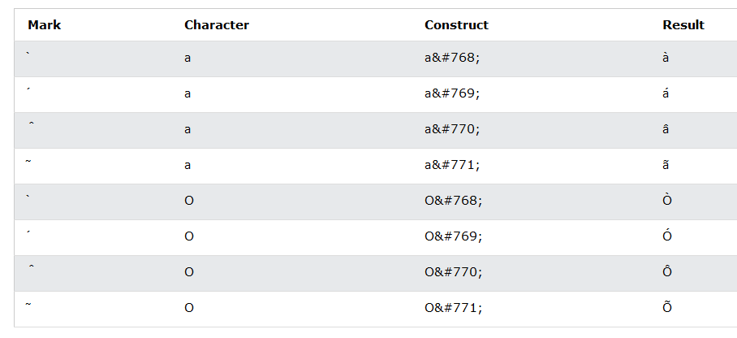

Note: Entity names are case sensitive.
A diacritical mark is a "glyph" added to a letter. Some diacritical marks, like grave and acute are called accents.
Diacritical marks can appear both above and below a letter, inside a letter, and between two letters.
Diacritical marks can be used in combination with alphanumeric characters to produce a character that is not present in the character set (encoding) used in the page.
